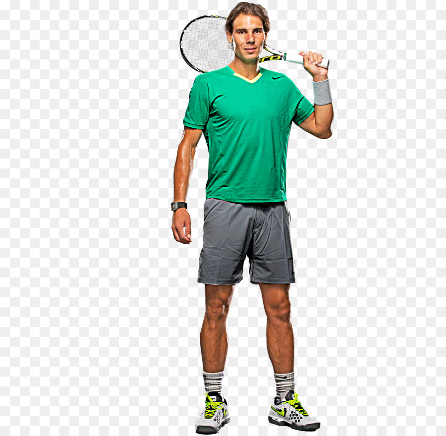

El origen del tenis se remonta a los siglos XII y XIII. Distintas teorías lo ubican en Inglaterra
o el norte de Francia, en el llamado «jeu de paume», juego de palma, pues se jugaba con la mano,
y atribuyen el nombre «tenis» a la palabra francesa «tenez», algo así como «toma» en castellano,
que era la voz de aviso al contrincante cuando se lanzaba la pelota.

Rafita Nadal
Top 10 tenistas
15/10/22
Los Tenistas Mas grandes del mundo
Novak Djokovic
Rafael Nadal
Dominic Thiem
Daniil Medvedev
SUI Roger Federer
Stefanos Tsitsipas
GER Alexander Zverev
RUS Andrey Rublev
ARG Diego Sebastian Schwartzman
ITA Matteo Berrettini
Los mejores tenistas del mundo, la mayoria de ellos son europeos